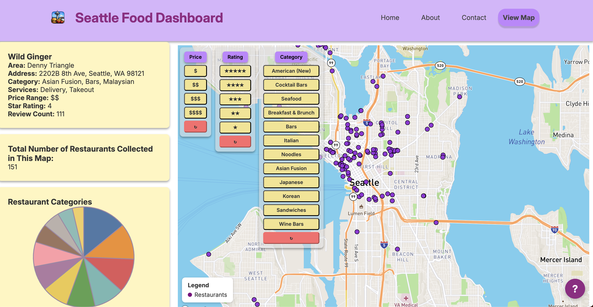

A smart interactive dashboard helping Seattle residents explore local restaurants, discover popular dining options, and compare attributes through live map and chart visualizations.
Team
Kristy Dang · Jeffrey Junio · Jonny Sung · Paisley Wu · Allen Yuan

The Seattle Food Dashboard is a smart dashboard designed to help Seattle residents explore restaurants across the city and identify places that match their preferences. Users can quickly discover popular dining options and compare restaurant attributes through interactive visualizations combining a live map with dynamic charts.
Data Currency
This project relies on a dataset approximately 4 years old sourced from Kaggle, originally derived from the Yelp Business API. Restaurant information displayed in the dashboard may not reflect current listings or ratings.
Thank you to Professor Zhao and the teaching assistants for his guidance throughout the development of this project. His support helped shape the design and technical implementation of our visualization.